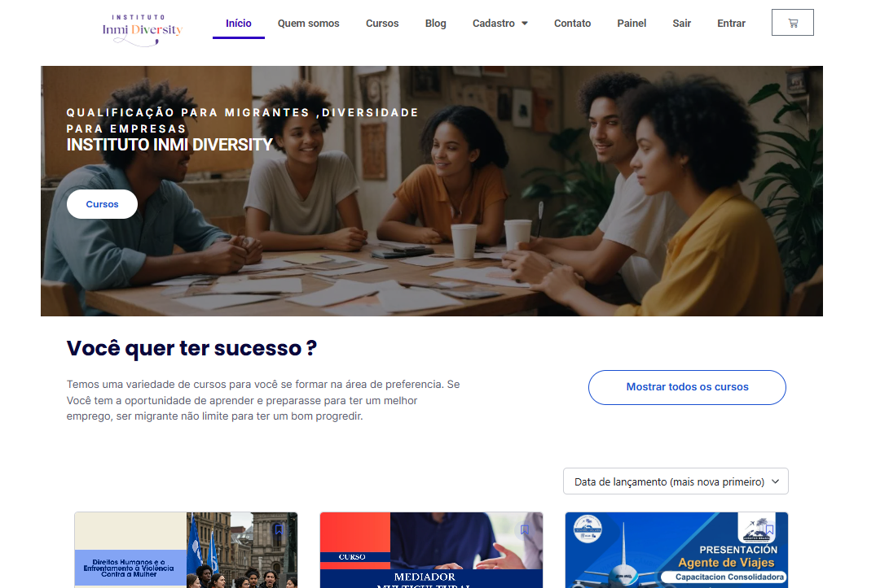
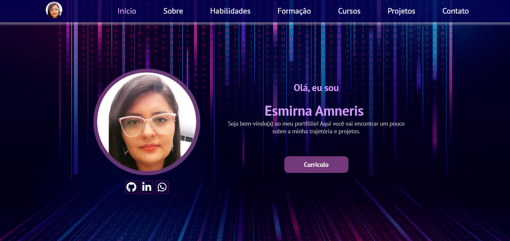

Desarrolladora Backend con formación en Administración de Empresas. Especializada en crear soluciones técnicas con visión de negocio.

Profesional colombiana con 12 años en Brasil y apasionada por la tecnología.
Graduada en Análisis y Desarrollo de Sistemas,
experiencia en Administración y Contabilidad, brindando una visión integral para soluciones técnicas estratégicas.
Especialista en Back-end y Análisis de Datos. Enfocada en optimizar procesos mediante el código.
Node.js, Express, SQL, MongoDB, JavaScript, Python, Power BI, React.
Adaptabilidad, aprendizaje continuo, trabajo en equipo, visión técnica y pensamiento crítico.

Plataforma de empleabilidad para migrantes. Desarrollada con React y Node.js.

